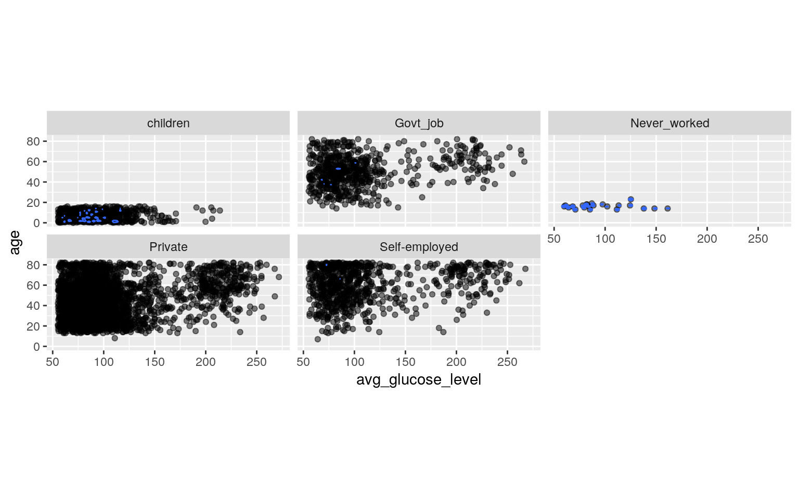
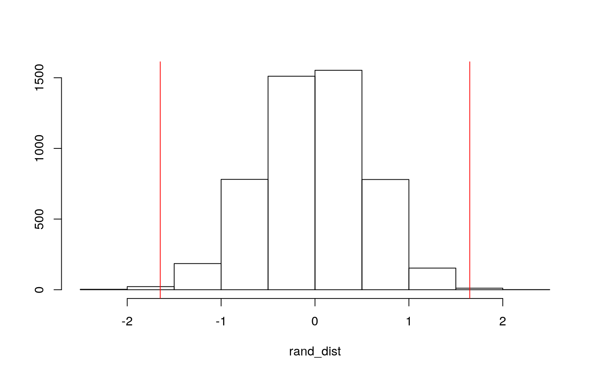
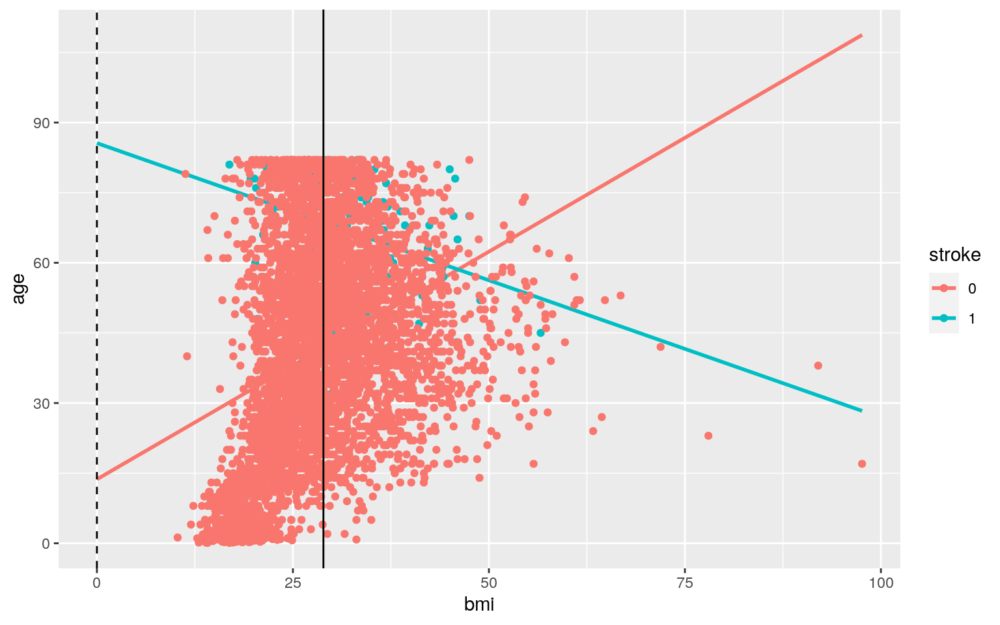
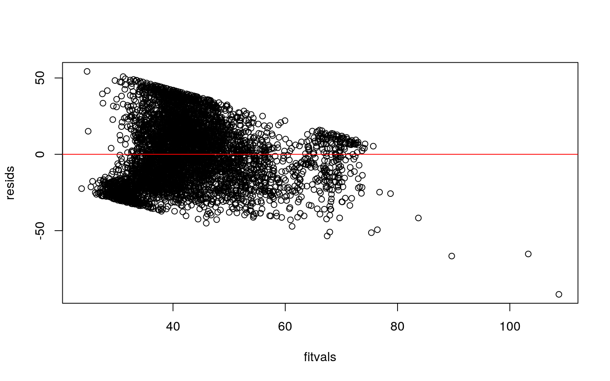
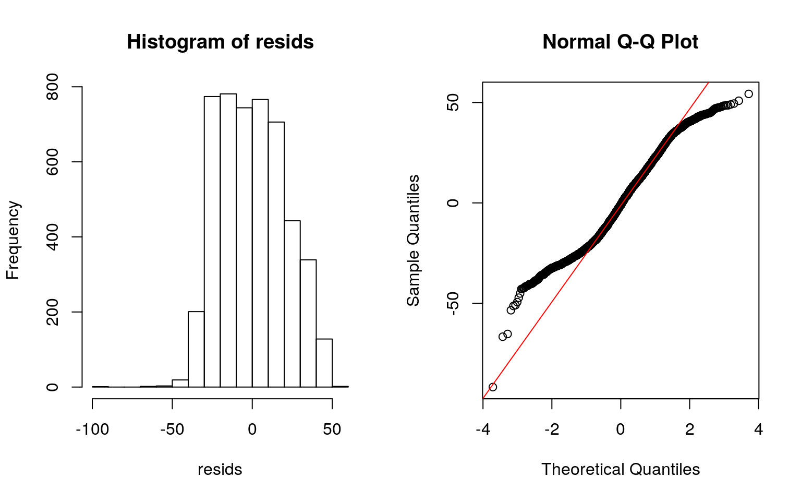
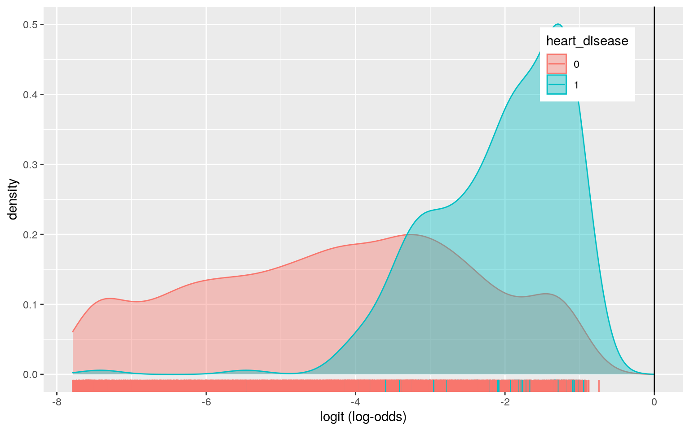
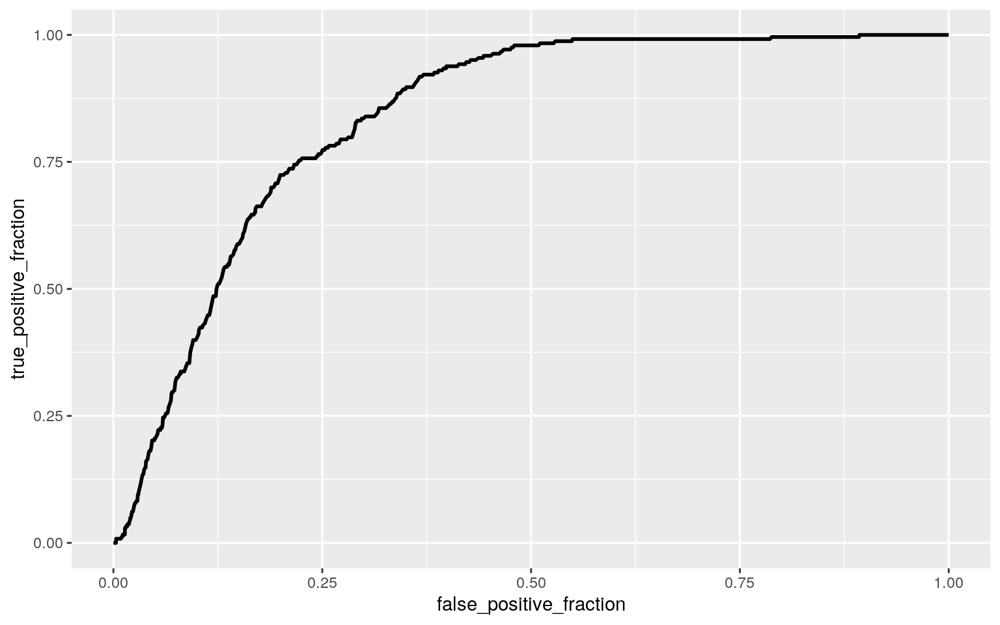

0. Introduction (5 pts)
The dataset I chose for this project is titled “Healthcare_Dataset_Stroke_data”. The dataset contains 12 variables including gender (“gender”/categorical), age (“age”/numeric), marital status (“ever_married”/categorical), work type (“work_type”/categorical), residence type (“residence_type”/categorical), average glucose level (avg_glucose_level/numeric), bmi (“bmi”/numeric), smoking status (“smoking_status”/categorical) and stroke (“stroke”, 1=yes, 0=no, binary). There are 5,110 observations for each of the 12 variables.
healthcare_dataset_stroke_data <- read_csv("healthcare-dataset-stroke-data.csv") #read in dataset
stroke <- healthcare_dataset_stroke_data #renaming dataset for convenience
stroke <- stroke %>% mutate(bmi=na_if(bmi, "N/A")) #recoding NAs
stroke <- stroke %>% na.omit() #removing NAs
stroke$stroke<-as.factor(stroke$stroke) #making stroke binary character
stroke$heart_disease<-as.factor(stroke$heart_disease)
stroke$bmi <- as.numeric(as.character(stroke$bmi)) #making bmi numeric
head(stroke) #preview of dataset## # A tibble: 6 x 12
## id gender age hypertension heart_disease ever_married
work_type Residence_type
## <dbl> <chr> <dbl> <dbl> <fct> <chr> <chr> <chr>
## 1 9046 Male 67 0 1 Yes Private Urban
## 2 31112 Male 80 0 1 Yes Private Rural
## 3 60182 Female 49 0 0 Yes Private Urban
## 4 1665 Female 79 1 0 Yes Self-employed Rural
## 5 56669 Male 81 0 0 Yes Private Urban
## 6 53882 Male 74 1 1 Yes Private Rural
## # … with 4 more variables: avg_glucose_level <dbl>, bmi
<dbl>, smoking_status <chr>, stroke <fct>library(sandwich) #for use later with bptest()
library(lmtest)
class_diag <- function(probs,truth){
#CONFUSION MATRIX: CALCULATE ACCURACY, TPR, TNR, PPV
tab<-table(factor(probs>.5,levels=c("FALSE","TRUE")),truth)
acc=sum(diag(tab))/sum(tab)
sens=tab[2,2]/colSums(tab)[2]
spec=tab[1,1]/colSums(tab)[1]
ppv=tab[2,2]/rowSums(tab)[2]
f1=2*(sens*ppv)/(sens+ppv)
if(is.numeric(truth)==FALSE & is.logical(truth)==FALSE) truth<-as.numeric(truth)-1
#CALCULATE EXACT AUC
ord<-order(probs, decreasing=TRUE)
probs <- probs[ord]; truth <- truth[ord]
TPR=cumsum(truth)/max(1,sum(truth))
FPR=cumsum(!truth)/max(1,sum(!truth))
dup<-c(probs[-1]>=probs[-length(probs)], FALSE)
TPR<-c(0,TPR[!dup],1); FPR<-c(0,FPR[!dup],1)
n <- length(TPR)
auc<- sum( ((TPR[-1]+TPR[-n])/2) * (FPR[-1]-FPR[-n]) )
data.frame(acc,sens,spec,ppv,f1,auc)
}1. MANOVA (15 pts)
A one-way MANOVA was conducted to determine the effect of work type on two dependent variables (age and average glucose level). Significant differences were found among work type for at least one of the dependent variables, Pillai trace=0.468, pseduo F(4, 10210)=389.79, p<0.0001. Univariate ANOVAs for each dependent variable were conducted as follow-up tests to the MANOVA, using the Bonferroni method for controlling Type I error rates for multiple comparisons. The univariate ANOVAs for average glucose level and age were also significant, F(4,5105)=16.612, p<0.0001 and F(4,5105)=1110.1, p<0.0001, respectively. For post hoc tests, I used a significance level of 0.002, given I ran 1 MANOVA, 2 ANOVAs and 20 post-hoc t-tests. If left unadjusted, probability of a type I error is 1-0.95^23=0.693. Post hoc analysis was performed conducting pairwise comparisons to determine which work type differed in average glucose level and age. Average glucose level significantly differed for individuals working in government and individuals who do not work because they have children. It also significantly differed for individuals working in the private sector compare to individuals who do not work because they have children. Average glucose level also differed between those who are self-employed and individuals who do not work because they have children as well as between those who are self-employed and individuals working in the private sector. On the other hand, there is a significant mean difference in age between all work types except between those who have never worked and individuals who do not work because they have children. Assumptions for running a MANOVA include random samples, independent observations, multivariate normality of DVs, homogeneity of within-group covariance matrices, linear relationships among DVs, no extreme univariate or multivariate outliers and no multicollinearity. Given the source of the dataset is confidential, we cannot confirm nor deny the random samples, independent observations assumption. Based on the mutivariate normality plots, this dataset may not pass the mutivariate normality assumption.
man1 <- manova(cbind(avg_glucose_level, age)~work_type, data=stroke)
summary(man1) #MANOVA## Df Pillai approx F num Df den Df Pr(>F)
## work_type 4 0.46884 375.4 8 9808 < 2.2e-16 ***
## Residuals 4904
## ---
## Signif. codes: 0 '***' 0.001 '**' 0.01 '*' 0.05 '.' 0.1
' ' 1summary.aov(man1) #Univariate ANOVAs## Response avg_glucose_level :
## Df Sum Sq Mean Sq F value Pr(>F)
## work_type 4 129397 32349 16.6 1.609e-13 ***
## Residuals 4904 9556650 1949
## ---
## Signif. codes: 0 '***' 0.001 '**' 0.01 '*' 0.05 '.' 0.1
' ' 1
##
## Response age :
## Df Sum Sq Mean Sq F value Pr(>F)
## work_type 4 1164201 291050 1071 < 2.2e-16 ***
## Residuals 4904 1332662 272
## ---
## Signif. codes: 0 '***' 0.001 '**' 0.01 '*' 0.05 '.' 0.1
' ' 1pairwise.t.test(stroke$avg_glucose_level,stroke$work_type, p.adj="none") #t-test for average glucose level##
## Pairwise comparisons using t tests with pooled SD
##
## data: stroke$avg_glucose_level and stroke$work_type
##
## children Govt_job Never_worked Private
## Govt_job 5.3e-08 - - -
## Never_worked 0.83169 0.23739 - -
## Private 8.7e-10 0.38353 0.30874 -
## Self-employed 3.5e-15 0.03363 0.08683 0.00017
##
## P value adjustment method: nonepairwise.t.test(stroke$age,stroke$work_type, p.adj="none") #t-test for age##
## Pairwise comparisons using t tests with pooled SD
##
## data: stroke$age and stroke$work_type
##
## children Govt_job Never_worked Private
## Govt_job < 2e-16 - - -
## Never_worked 0.0092 < 2e-16 - -
## Private < 2e-16 3.9e-14 2.5e-16 -
## Self-employed < 2e-16 < 2e-16 < 2e-16 < 2e-16
##
## P value adjustment method: none0.05/(20+1+2) #Bonferroni method for error## [1] 0.0021739131-0.95^23 #probability of type I error## [1] 0.6926431ggplot(stroke, aes(x = avg_glucose_level, y = age)) +
geom_point(alpha = .5) + geom_density_2d(h=2) + coord_fixed() + facet_wrap(~work_type)
2. Randomization Test (10 pts)
I am performing a randomization test to determine if the mean bmi is significantly different for individuals who have had a stroke compared to individuals who have not had a stroke. Ho: mean bmi is the same for individuals who have had a stroke and individuals who have not. Ha: mean bmi is different for individuals who have had a stroke and individuals who have not. After performing a randomization test on my data for mean difference, it was revealed that there is a significant different in mean bmi for individuals who have had a stroke and individuals who have not (p=0.0026).
stroke%>%group_by(stroke)%>%
summarize(means=mean(bmi)) %>% summarize(`mean_diff`=diff(means)) #observed mean difference in bmi for those who have had stroke vs those who have not## # A tibble: 1 x 1
## mean_diff
## <dbl>
## 1 1.65rand_dist<-vector() #randomization test
for(i in 1:5000){
new<-data.frame(bmi=sample(stroke$bmi),stroke=stroke$stroke)
rand_dist[i]<-mean(new[new$stroke==0,]$bmi)-
mean(new[new$stroke==1,]$bmi)}
mean(rand_dist>1.648228 | rand_dist< -1.648228) #two-tailed p value## [1] 0.0042{hist(rand_dist,main="",ylab=""); abline(v = c(-1.648228, 1.648228),col="red")} #plot visualizing null distribution and test-statistic
3. Linear Regression Model (40 pts)
A linear regression predicting age from previous stroke history (1=yes,0=no) and bmi (after centering) revealed that 41.829 is the mean/predicted age for individuals who have never had a stroke with average bmi. For people with average bmi, people who have previously had a stroke have average/predicted age that is 26.810 greater than individuals who have never had a stroke, difference is significant (b=26, t=17.887, p<0.05). Estimated slope for BMI on age for people who have never had a stroke is 0.974. Slope of BMI on age for individuals who have previously had a stroke is -1.5607 less than for individuals who have never had a stroke. The proportion of the variation in the age explained by this model is 0.1668. Residuals are not perfectly normally distributed, but ok, based on a histogram of residuals. Based on a bptest() for homoskedasticity and plotted residuals vs fitted values, we have heteroskadasticity (p<0.05). Based on the plot modeling the relationship between residuals and fitted values, there is not a clear linear relationship (fanning). After recomputing regression results with robust standard errors, standard error values increased for stroke1, bmi_c and intercept but not for stroke1:bmi_c. We still reject the null hypothesis of homoskedasticity.
stroke$bmi_c <- stroke$bmi - mean(stroke$bmi)
fit<-lm(age ~ stroke*bmi_c, data=stroke) #linear regression
summary(fit)##
## Call:
## lm(formula = age ~ stroke * bmi_c, data = stroke)
##
## Residuals:
## Min 1Q Median 3Q Max
## -91.741 -17.461 -0.952 14.951 54.305
##
## Coefficients:
## Estimate Std. Error t value Pr(>|t|)
## (Intercept) 41.82879 0.30042 139.233 < 2e-16 ***
## stroke1 26.81017 1.49882 17.887 < 2e-16 ***
## bmi_c 0.97388 0.03799 25.635 < 2e-16 ***
## stroke1:bmi_c -1.56070 0.22879 -6.822 1.01e-11 ***
## ---
## Signif. codes: 0 '***' 0.001 '**' 0.01 '*' 0.05 '.' 0.1
' ' 1
##
## Residual standard error: 20.6 on 4905 degrees of freedom
## Multiple R-squared: 0.1668, Adjusted R-squared: 0.1662
## F-statistic: 327.2 on 3 and 4905 DF, p-value: < 2.2e-16coeftest(fit, vcov = vcovHC(fit))[,1:2] #using robust standard errors## Estimate Std. Error
## (Intercept) 41.8287910 0.30471635
## stroke1 26.8101652 0.89979839
## bmi_c 0.9738767 0.04951851
## stroke1:bmi_c -1.5606987 0.12521813ggplot(stroke, aes(bmi,age, color = stroke)) + geom_smooth(method = "lm", se = F, fullrange = T) + geom_point()+geom_vline(xintercept=0,lty=2)+geom_vline(xintercept=mean(stroke$bmi)) #plot of regression
#assumptions
bptest(fit) #testing heteroskedasticity assumption: Ho: homoskedsastic!##
## studentized Breusch-Pagan test
##
## data: fit
## BP = 102.99, df = 3, p-value < 2.2e-16resids<-fit$residuals #creating residuals vs fitted values plot
fitvals<-fit$fitted.values
plot(fitvals,resids); abline(h=0, col='red')
par(mfrow=c(1,2)); hist(resids); qqnorm(resids); qqline(resids, col='red')
4. Regression Model with Bootstrapped SEs (5 pts)
After rerunning the same regression model with the interaction but computing bootstrapped standard errors, the SEs are very similar to the robust standard errors and slightly larger than the original SEs, likely indicating a smaller p-value.
samp_distn<-replicate(5000, {
boot_dat <- sample_frac(stroke, replace=T) #take bootstrap sample of rows
fit_boot_se <- lm(age~bmi_c*stroke, data=boot_dat) #fit model on bootstrap sample
coef(fit_boot_se) #save coefs
})
samp_distn %>% t %>% as.data.frame %>% summarize_all(sd) # estimated SEs## (Intercept) bmi_c stroke1 bmi_c:stroke1
## 1 0.3037416 0.04884177 0.9080543 0.12168055. Logistic Regression (30 pts)
After running a logistic regression predicting heart disease (1=yes, 0=no) from age and bmi, it is revealed that when holding BMI constant, going up 1 year in age increases log-odds by 0.0804 and multiplies odds by a factor of e^1.0838. Going up 1 unit in BMI increases log-odds by 0.013443 and multiplies odds by a factor of e^1.0135. I computed a confusion matrix, revealing insights into the calculations for sensitivity, accuracy, specificity, precision and AUC. The accuracy of this regression was 0.95, sensitivity (TPR) was 0, specificity (TNR) was 1 and the auc was 0.849 (ppv not given). This means there are 0 true positives and zero false positives. Given a TPR of 0 and a TNR of 1, the model is not predicting individuals with heart disease very well. Additionally, an AUC of 0.849 indicates a decent, but not great, model. The ROC curve demonstrates how the model is not perfect as it curves up and to the right.
maybe <- stroke %>% select(heart_disease, age, bmi) %>% mutate(y=ifelse(heart_disease=="1", 1, 0))
fit_log<-glm(y~age + bmi,data=maybe,family=binomial(link="logit"))
coeftest(fit_log)##
## z test of coefficients:
##
## Estimate Std. Error z value Pr(>|z|)
## (Intercept) -7.975447 0.522524 -15.2633 <2e-16 ***
## age 0.080436 0.005280 15.2342 <2e-16 ***
## bmi 0.013443 0.010625 1.2653 0.2058
## ---
## Signif. codes: 0 '***' 0.001 '**' 0.01 '*' 0.05 '.' 0.1
' ' 1exp(coef(fit_log))## (Intercept) age bmi
## 0.000343801 1.083759887 1.013533942maybe$prob <- predict(fit_log,type="response") #get predicted probabilities
maybe$predicted <- ifelse(maybe$prob>.5,"heart disease","no heart disease") #get predicted outcomes
maybe$logit<-predict(fit_log) #save predicted log-odds
#DENSITY PLOT
maybe%>%ggplot()+geom_density(aes(logit,color=heart_disease,fill=heart_disease), alpha=.4)+
theme(legend.position=c(.85,.85))+geom_vline(xintercept=0)+xlab("logit (log-odds)")+
geom_rug(aes(logit,color=heart_disease)) #density plot
#CONFUSION MATRIX
table(truth=maybe$heart_disease, prediction=maybe$predicted)%>%addmargins #confusion matrix## prediction
## truth no heart disease Sum
## 0 4666 4666
## 1 243 243
## Sum 4909 4909class_diag(maybe$prob,maybe$heart_disease) #sensitivity, accuracy, other measures## acc sens spec ppv f1 auc
## 1 0.9504991 0 1 NaN NaN 0.8485652#ROC PLOT
library(plotROC) #install.packages(plotROC)
#geom_roc needs actual outcome (0,1) and predicted probability (or predictor if just one)
ROCplot<-ggplot(maybe)+geom_roc(aes(d=y,m=age + bmi), n.cuts=0)
ROCplot
6.Logistic Regression with all variables (25 pts)
After performing a logistic regression predicting heart disease from all of the other variables, the accuracy was 0.950 (proportion of correctly classified individuals), sensitivity was 0.0205 (TPR), specificity was 0.998 (TNR), precision (PPV) was 0.417 and the AUC was 0.874. This model performs slightly better than the previous with a higher AUC, however, precision and sensitivity are both very low indicating the proportion of individuals with heart disease correctly classified is low and the proportion classified as having heart disease who actually do is low. After running a 10 fold CV with the same model, average out of sample accuracy was 0.95, sensitivity was 0.0221, specificity was 0.999 and the AUC was 0.868. The 10 fold CV resulted in worse performance out of sample, indicating over-fitting. Compared to the in-sample metrics, acc is about the same, sensitivity is slightly lower and specificity is the same. After performing LASSO on the same model, the variables retained are genderMale, age, average glucose level and stroke1. I then performed a 10-fold CV using only those variables retained. The out of sample AUC for this model was 0.869. Compared to the AUC from the previous logistic regression, this AUC is very slightly larger (0.869 vs 0.868), indicating this model is not much better than the previous model. Finally, this AUC is decent but not great.
stroke2 <- stroke %>% select(-id,-bmi_c)
head(stroke2) ## # A tibble: 6 x 11
## gender age hypertension heart_disease ever_married
work_type Residence_type avg_glucose_lev…
## <chr> <dbl> <dbl> <fct> <chr> <chr> <chr> <dbl>
## 1 Male 67 0 1 Yes Private Urban 229.
## 2 Male 80 0 1 Yes Private Rural 106.
## 3 Female 49 0 0 Yes Private Urban 171.
## 4 Female 79 1 0 Yes Self-employed Rural 174.
## 5 Male 81 0 0 Yes Private Urban 186.
## 6 Male 74 1 1 Yes Private Rural 70.1
## # … with 3 more variables: bmi <dbl>, smoking_status
<chr>, stroke <fct>fit_all <- glm(heart_disease~., data=stroke2, family="binomial") #logistic regression using all predictors
exp(coef(fit_all))## (Intercept) genderMale genderOther
## 3.468360e-04 2.186341e+00 4.369913e-05
## age hypertension ever_marriedYes
## 1.085180e+00 1.229247e+00 7.398772e-01
## work_typeGovt_job work_typeNever_worked work_typePrivate
## 5.747176e-01 6.143198e-05 6.054248e-01
## work_typeSelf-employed Residence_typeUrban
avg_glucose_level
## 4.996263e-01 8.904092e-01 1.005050e+00
## bmi smoking_statusnever smoked smoking_statussmokes
## 1.004171e+00 7.946097e-01 1.791868e+00
## smoking_statusUnknown stroke1
## 8.389938e-01 1.388893e+00prob2<-predict(fit_all,type="response")
class_diag(prob2,stroke2$heart_disease)## acc sens spec ppv f1 auc
## 1 0.9500917 0.02057613 0.9984998 0.4166667 0.03921569
0.8740905#10 fold CV
set.seed(1234)
k=10
data <- stroke2 %>% sample_frac #put rows of dataset in random order
folds <- ntile(1:nrow(data),n=10) #create fold labels
diags<-NULL
for(i in 1:k){
train <- data[folds!=i,] #create training set (all but fold i)
test <- data[folds==i,] #create test set (just fold i)
truth <- test$heart_disease #save truth labels from fold i
fit_last <- glm(heart_disease~., data=stroke2, family="binomial")
probs <- predict(fit_last, newdata=test, type="response")
diags<-rbind(diags,class_diag(probs,truth))
}
summarize_all(diags,mean) #average diagnostics across all 10 folds## acc sens spec ppv f1 auc
## 1 0.950091 0.02207005 0.9985037 NaN NaN 0.8729339#LASSO
library(glmnet)
y<-as.matrix(stroke2$heart_disease) #grab response
x<-model.matrix(heart_disease~.,data=stroke2)[,-1] #grab predictors
head(x)## genderMale genderOther age hypertension ever_marriedYes
work_typeGovt_job work_typeNever_worked
## 1 1 0 67 0 1 0 0
## 2 1 0 80 0 1 0 0
## 3 0 0 49 0 1 0 0
## 4 0 0 79 1 1 0 0
## 5 1 0 81 0 1 0 0
## 6 1 0 74 1 1 0 0
## work_typePrivate work_typeSelf-employed
Residence_typeUrban avg_glucose_level bmi
## 1 1 0 1 228.69 36.6
## 2 1 0 0 105.92 32.5
## 3 1 0 1 171.23 34.4
## 4 0 1 0 174.12 24.0
## 5 1 0 1 186.21 29.0
## 6 1 0 0 70.09 27.4
## smoking_statusnever smoked smoking_statussmokes
smoking_statusUnknown stroke1
## 1 0 0 0 1
## 2 1 0 0 1
## 3 0 1 0 1
## 4 1 0 0 1
## 5 0 0 0 1
## 6 1 0 0 1cv<-cv.glmnet(x,y,family="binomial")
lasso<-glmnet(x,y,family="binomial",lambda=cv$lambda.1se)
coef(lasso) ## 17 x 1 sparse Matrix of class "dgCMatrix"
## s0
## (Intercept) -6.004457958
## genderMale 0.233279744
## genderOther .
## age 0.048761457
## hypertension .
## ever_marriedYes .
## work_typeGovt_job .
## work_typeNever_worked .
## work_typePrivate .
## work_typeSelf-employed .
## Residence_typeUrban .
## avg_glucose_level 0.003028001
## bmi .
## smoking_statusnever smoked .
## smoking_statussmokes .
## smoking_statusUnknown .
## stroke1 0.162234750#10-fold CV with only LASSO selected variables
set.seed(1234)
k=10
data2 <- stroke2 %>% sample_frac #put rows of dataset in random order
folds <- ntile(1:nrow(data),n=10) #create fold labels
diags<-NULL
for(i in 1:k){
train2 <- data2[folds!=i,] #create training set (all but fold i)
test2 <- data2[folds==i,] #create test set (just fold i)
truth2 <- test2$heart_disease #save truth labels from fold i
fit_final <- glm(heart_disease~ gender + age + avg_glucose_level + stroke, data2, family="binomial")
probs_final <- predict(fit_final, newdata=test2, type="response")
diags<-rbind(diags,class_diag(probs_final,truth2))
}
diags%>%summarize_all(mean)## acc sens spec ppv f1 auc
## 1 0.9502947 0.01407005 0.999143 NaN NaN 0.8686514…